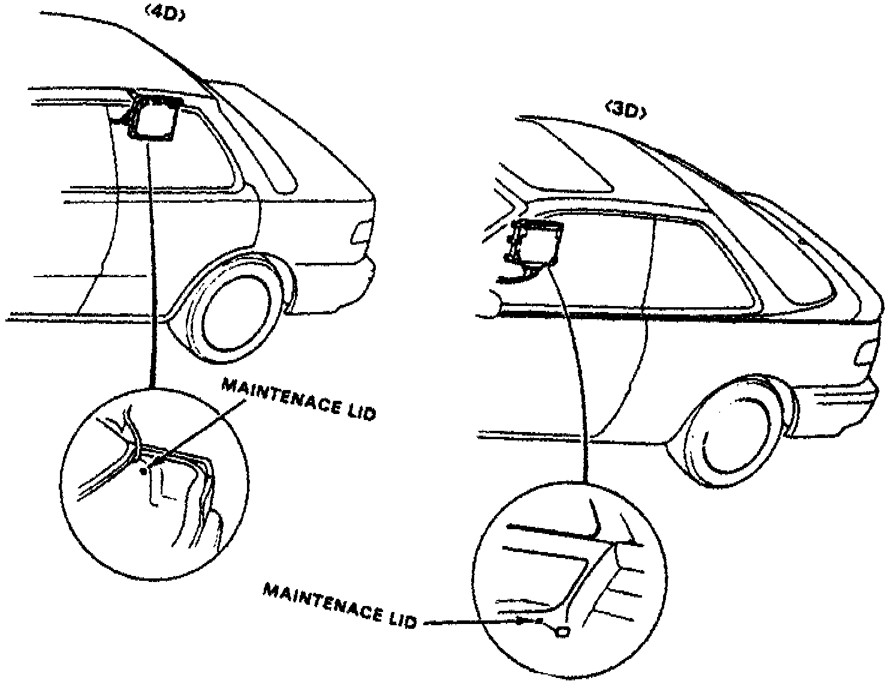
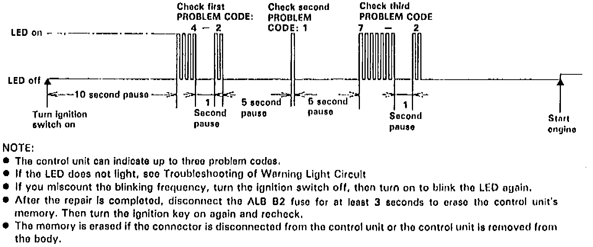

ABS Light: Testing and Inspection
1. If anti-lock warning light does not go on when ignition is turned on, check the following items:a. Blown anti-lock warning bulb.
d. Open circuit between No. 23 fuse and combination meter.
c. Open circuit in blue/red lead between combination meter and control unit.
d. Bad control unit to body ground.
e. If not loose or disconnected, install new control unit and recheck.
2. If anti-lock brake warning light remains on after engine is started and LED on control unit does not blink any code or sub code, check for the following:
a. Loose or poor connection of wire harness at control unit.
b. Faulty ABS 2 fuse.
c. Open circuit in white lead between ABS 2 fuse and control unit.
d. Open circuit in yellow/black lead between fail-safe relay and fuse No.17.
e. Short circuit in blue/red lead between combination meter and control unit.
f. Open circuit in white/blue lead between alternator and control unit.
Fig. 5 Control Unit:

Fig. 6 Control Unit Troubleshooting LED:

3. If warning lamp remains on while engine is running, proceed as follows:
a. Stop engine, then turn ignition switch to On position and ensure anti-lock warning lamp comes on.
b. Restart engine and check warning lamp. If warning lamp goes off, there is no malfunction.
c. If warning lamp remains on, stop engine, then open trunk or, if equipped, ABS maintenance lid.
d. Turn ignition switch to On position but do not start engine.
e. Record blinking frequency of LED on control unit, Figs. 5 and 6. Read trouble codes.
4. Control unit can indicate up to three trouble codes. If LED does not light, repeat steps 1 through 3.
5. If required, turn ignition switch off, then turn on to read LED.
6. After repair is completed, disconnect ABS B2 fuse for three seconds to erase control unit memory, then turn ignition switch on to recheck.
7. Memory is erased if connector is disconnected from control unit or control unit is removed from body.